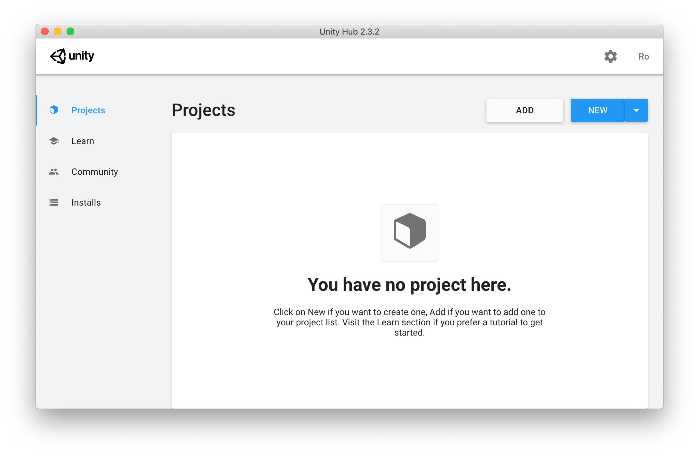
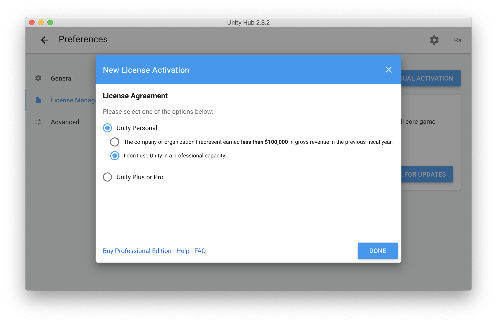
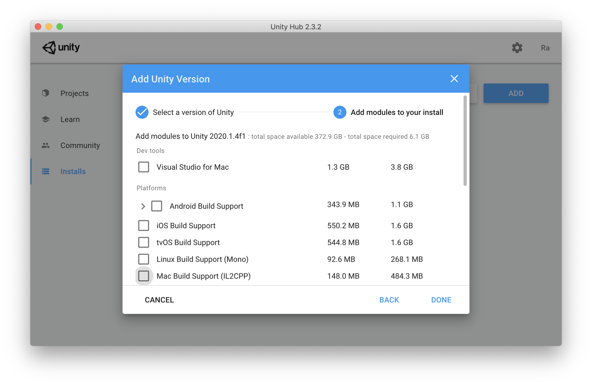
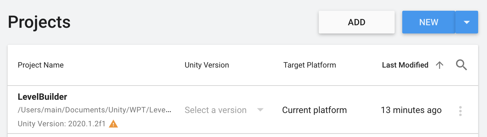
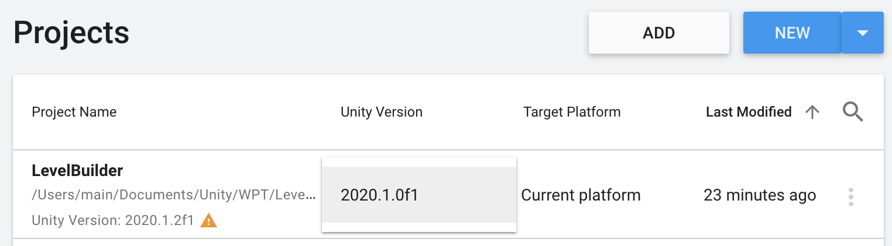
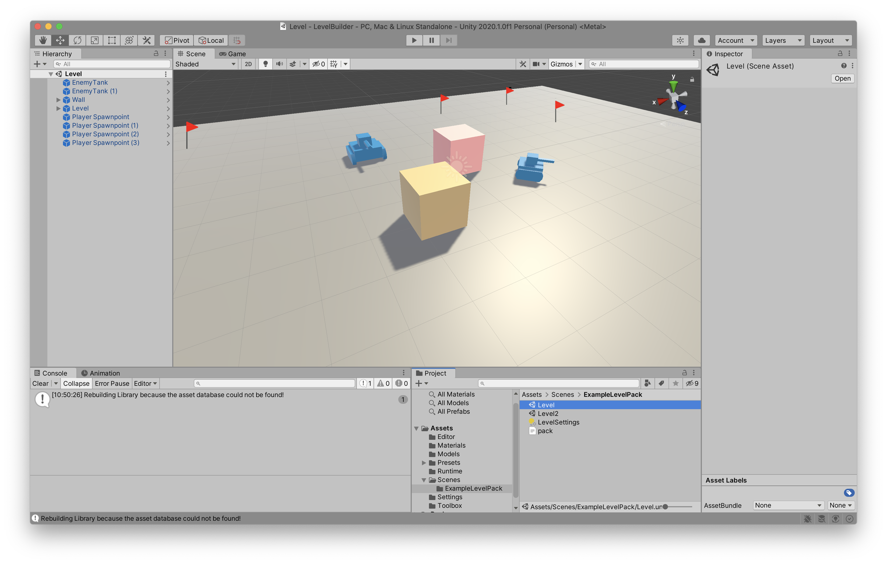

Getting Started with the Level Builder
We use a Unity project with editor extensions as our level builder. This page explains how to setup Unity and the project so you can create your own custom levels.
Setting up Unity
- If you have a Unity account, skip this step. You can register for a free Personal license at https://store.unity.com/#plans-individual.
-
Download the Unity Hub at unity3d.com/get-unity/download.
Once you have installed and opened it, you will see a similar screen:

-
If you have activated your license, skip this step. Press the gear button at the top right corner of the window. Select License Management, then press Activate New License. Select the options that match your use:

-
Return to the main view by pressing the back arrow at the top-left corner of the window.
-
Next, navigate to the Installs section in the sidebar. Ensure that you have Unity 2020.1.0 or newer installed. If you do not have it installed, use the blue Add button to install Unity. You do not need any modules, so you can uncheck all of them to reduce the size of the install.

-
Download the Level Builder Project and unzip it.
-
Return to the Projects section. Use the Add button in the Projects section of the Unity Hub to add the Level Builder Project. Once you have done this, your projects section should be populated:

-
If the cell under Unity Version says Select a Version, click the text to select your Unity Version.

-
Click on the name of the project in the list to launch the level builder. Inside the Scenes folder, open the ExampleLevelPack folder to view some samples.

Next Steps
To learn how to use the tools provided in the level builder project, read the Elements documentation and the Tools documentation.